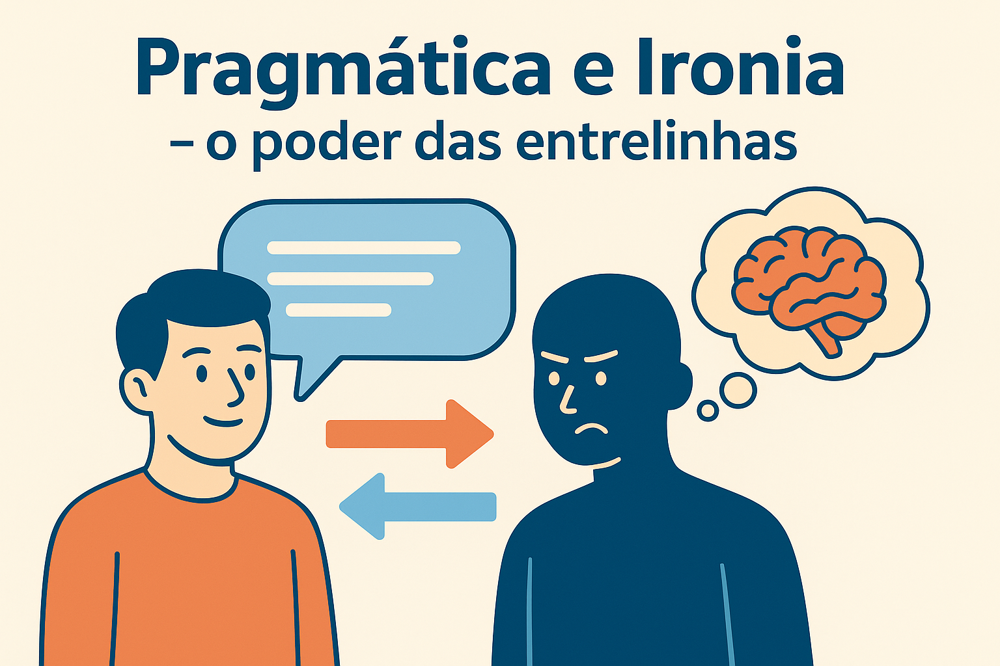

Pragmática e Ironia: O Sentido nas Entrelinhas e o Humor Pragmático
Entre todas as façanhas da cognição e da comunicação humana, poucas revelam de forma tão exuberante a complexidade da linguagem quanto a nossa capacidade de dizer exatamente o oposto daquilo que as palavras expressam e, ainda assim, sermos perfeitamente compreendidos por nossos pares. A definição clássica e escolar consagrada nos manuais de retórica — que descreve a ironia como uma simples figura de estilo consistente em "dizer o contrário do que se pensa" — é insuficiente para explicar a densidade desse fenômeno. A ironia não é um mero artifício decorativo: é um modo sofisticado de ação pragmática, um jogo intelectual polifônico e uma das armas mais refinadas da crítica social e do humor humano.
Para que um enunciado irônico ganhe vida, o significado literal deve entrar em colapso proposital diante das circunstâncias da enunciação. Como comprovaram os estudos seminais de Paul Grice (1975), Dan Sperber e Deirdre Wilson (1981, 1995) e Oswald Ducrot (1984), a ironia exige que emissor e receptor compartilhem um vasto terreno de conhecimentos mútuos (common ground). Ao interpretar a ironia, o leitor não decodifica signos isolados: ele reconhece atitudes de distanciamento, avalia o tom, desconstrói expectativas e reconstrói o sentido que habita nas entrelinhas.
No âmbito dos vestibulares de excelência (como ENEM, PAES UEMA, Fuvest e Unicamp), dos concursos públicos e da análise crítica de charges, tirinhas, literatura e memes das redes sociais, dominar o funcionamento pragmático da ironia, do sarcasmo e do humor é indispensável para evitar armadilhas literais e exercer uma leitura verdadeiramente emancipada.
Neste artigo acadêmico completo, você explorará os modelos teóricos que superaram a visão retórica clássica (Grice, Sperber & Wilson e Ducrot), as fronteiras funcionais entre ironia sutil, sarcasmo hostil e humor cognitivo, as pistas de detecção na fala e na escrita, a análise da Lei de Poe na era digital, roteiro metodológico, análises empíricas passo a passo, questões oficiais resolvidas e sínteses teóricas.

A superação da retórica clássica: três modelos teóricos da ironia na Pragmática
Se a ironia fosse apenas "dizer o contrário do que se pensa", ao tropeçarmos e derrubarmos um prato cheio de comida na cozinha, a frase “Sou um acrobata desajeitado” não seria irônica, pois é literalmente verdadeira; contudo, quando dizemos com escárnio “Parabéns pelo belo espetáculo circense!”, a ironia resplandece. Para explicar a mecânica desse processo, a Pragmática contemporânea formulou três modelos complementares de alta potência explicativa:
1. O Modelo Griceano: Transgressão Aberta da Máxima de Qualidade (Grice, 1975)
Para H. Paul Grice, a ironia constitui uma transgressão deliberada e ostensiva (flouting) da Máxima de Qualidade (“Não afirme aquilo que você acredita ser falso”). Quando um professor olha para um aluno que tirou nota zero e exclama “Você é um verdadeiro gênio da matemática!”, ele quebra a máxima de forma tão escandalosa que o ouvinte não pode supor que ele está tentando mentir. Confiando que o professor continua respeitando o Princípio de Cooperação em nível profundo, o aluno calcula a implicatura conversacional: o professor quis comunicar propositalmente a proposição contraditória oposta.
2. A Teoria da Menção Ecoica e Atitude Dissociativa (Sperber e Wilson, 1981, 1995)
No âmbito da Teoria da Relevância, Sperber e Wilson demonstraram que a ironia não reside em uma substituição mecânica de significados opostos, mas na menção ecoica de uma voz ou pensamento prévio. Ao dizer ironicamente em um dia de tempestade “Que tempo maravilhoso para um piquenique!”, o falante está fazendo eco a uma expectativa anterior (a esperança de bom tempo), expressando uma atitude de zombaria, frustração e distanciamento crítico em relação a essa crença frustrada.
3. A Abordagem Polifônica de Oswald Ducrot (1984)
O linguista francês Oswald Ducrot, em sua teoria da Polifonia da Enunciação, defendeu que o enunciado irônico abriga múltiplos sujeitos em um único ato de fala: o Locutor (L), responsável pela emissão física das palavras, coloca em cena um Enunciador fictício (E) que expressa uma afirmação absurda, ridícula ou insensata. O locutor não assume essa voz: ele apresenta esse enunciador ridículo perante o auditório unicamente para que os interlocutores possam rir dele e rejeitar sua tese.
A ironia como polifonia e eco crítico
“A ironia consiste essencialmente em fazer ouvir a voz de um outro enunciador, apresentando a sua tese como manifestamente inadequada ou absurda, enquanto o locutor real contempla de fora esse espetáculo, zombando da ilusão enunciada. Longe de ser um desvio semântico, a ironia é um ato de julgamento de valor e distanciamento cético” (DUCROT, 1984, p. 211; SPERBER; WILSON, 1995).
Ironia, Sarcasmo e Humor Pragmático: distinções estruturais
Embora partilhem o território comum da comunicação indireta e da quebra de expectativas literais, a ironia, o sarcasmo e o humor pragmático exercem funções sociais e psicológicas radicalmente diferentes:
Ironia (O Tropos do Distanciamento)
Possui natureza intelectual, estética, sutil e polissêmica. Seu alvo pode ser uma situação do destino, uma ilusão humana universal ou uma ideia abstrata. Nem sempre visa ferir ou magoar.
Exemplo: “Comprei um livro sobre como curar a insônia, mas adormeci logo na introdução.”
Sarcasmo (A Ironia Hostilizada)
Possui etimologia reveladora (do grego sarkasmós, "rasgar a carne"). É a ironia cáustica, ácida e agressiva, dotada de um alvo humano explícito com a intenção deliberada de diminuir, ridicularizar e rebaixar a face positiva do outro.
Exemplo: “Continue falando... quem sabe um dia desses você consiga dizer algo que faça sentido!”
O Humor Pragmático, por sua vez, é o resultado cognitivo da resolução de incongruências contextuais. O riso explode no instante exato em que o ouvinte, conduzido por uma pista textual que parecia indicar uma direção interpretativa trivial, é obrigado a recalibrar abruptamente suas inferências e adotar uma nova moldura mental inesperada.
A tabela a seguir sistematiza as diferenças operacionais entre esses três recursos discursivos:
| Recurso Discursivo | Propósito Pragmático Central | Alvo Principal | Impacto na Face do Interlocutor | Exemplo Típico |
|---|---|---|---|---|
| Ironia Sutil | Provocar reflexão crítica e distanciamento estético | Uma ideia, situação existencial ou crença prévia | Neutro ou atenuado (cumplicidade intelectual) | “A pressa da burocracia estatal é comovente.” |
| Sarcasmo | Humilhar, ferir a dignidade e demarcar superioridade | Um sujeito particular ou grupo antagônico definido | Altamente destrutivo (agressão frontal à face) | “Você deve ter feito um esforço descomunal para errar tanto.” |
| Humor Pragmático | Gerar comicidade pela quebra de esquemas cognitivos | A própria rigidez da linguagem ou da lógica social | Positivo e integrador (gera adesão e alívio de tensão) | “Adoro prazos de entrega: adoro o barulho que fazem quando passam.” |
Pistas e marcadores da ironia: da oralidade ao espaço digital
Como a ironia vive da tensão entre o que é dito e o que é significado, o falante deixa estrategicamente uma série de pistas indiciais para evitar que sua fala seja tragicamente consumida como verdade literal:
1. Pistas na Linguagem Oral e Corporal
- Prosódia e Curva Melódica: entonação arrastada, modulação descendente artificial ou ênfase desproporcional em certas sílabas tónicas (o chamado "tom sarcástico");
- Pausas Dramáticas e Suspiros: silêncios inseridos antes da palavra-chave para denunciar o descompasso entre a expectativa e o juízo real;
- Cinésica Facial e Gestual: arqueamento assimétrico de uma sobrancelha, sorriso labial rígido (não compartilhado pelos olhos), revirar de olhos ou balançar resignado da cabeça.
2. Pistas na Linguagem Escrita Tradicional
- Aspas de Distanciamento (Aspas Irônicas): utilizadas para sinalizar que o vocábulo pertence a um discurso alheio que o autor desqualifica (ex.: O “esclarecido” ditador fechou o parlamento);
- Hipérboles Escandalosas: o exagero extravagante que viola o senso comum de verossimilhança (ex.: “Esperar duas horas nesta fila foi o ponto alto da minha semana”);
- Contraste Cotextual e Multimodal: em charges e tirinhas, o texto verbal expressa ufanismo enquanto a imagem gráfica exibe ruína física e miséria material.
3. A Ironia na Era Digital e a Lei de Poe
No ecossistema veloz e hipertextual das redes sociais (X/Twitter, Instagram, WhatsApp, TikTok), a ironia ganhou novos códigos multimodais: o uso de memes, caixas altas alternadas (“eU sOu MuItO iNtElIgEnTe”), figurinhas autodepreciativas e emojis que atuam como marcadores explícitos de atitude (o emoji de palhaço 🤡, a caveira de riso 💀 ou a mão no queixo 🤔).
O colapso do contexto e a Lei de Poe
Formulada pelo ensaísta Nathan Poe em 2005, a célebre Lei de Poe estabelece um axioma pragmático incontornável: “Na internet, na ausência de uma indicação explícita e inequívoca do autor (como um emoji ou aviso de sátira), é absolutamente impossível criar uma paródia de ideias extremistas tão absurda que ela não seja confundida por alguém com uma postura sincera e literal.” Isso ocorre porque a comunicação digital suprime a prosódia, a cinésica e o contato visual, aumentando exponencialmente o risco de mal-entendidos pragmáticos desastrosos.
Roteiro metodológico: como analisar a ironia em charges, crônicas e tirinhas
Para estudantes de Letras, vestibulandos e analistas discursivos, a dissecação da ironia em textos verbais e multimodais deve seguir este procedimento analítico rigoroso:
Passo a Passo da Análise Pragmática da Ironia
- Identificação do conteúdo proposicional explícito: extrair o significado literal da frase proferida pela personagem ou autor;
- Inspeção do contexto situacional e multimodal: confrontar o que foi dito com o que a imagem visual revela (expressões faciais, cenário, cores) ou com o cotexto histórico da notícia;
- Diagnóstico da quebra das máximas de Grice: identificar a transgressão da Qualidade (dizer algo manifestamente irreal) ou da Relação (resposta desconexa proposital);
- Rastreamento da voz ecoada (Sperber & Wilson / Ducrot): determinar qual discurso prévio, promessa política ou ideal social ingênuo está sendo citado e ridicularizado na cena;
- Formulação da implicatura e tese oculta: traduzir em prosa clara qual é o posicionamento crítico real sustentado pelo autor nas entrelinhas;
- Avaliação dos efeitos perlocucionários: avaliar se o enunciado buscou desmascarar a hipocrisia social (crítica política), provocar o riso desarmado (humor lúdico) ou ferir um adversário (sarcasmo combativo).
Exemplos práticos de análise empírica aplicada
Caso 1: A genialidade da ironia machadiana
Trecho Clássico: No encerramento de Memórias Póstumas de Brás Cubas (1881), o narrador-defunto faz o balanço final de sua existência burguesa no capítulo "Das Negativas":
“Não alcancei a celebridade do emplasto, não fui ministro, não fui califa, não conheci o casamento. (...) Ao chegar a este outro lado do mistério, achei-me com um pequeno saldo, que é a derradeira negativa deste capítulo de negativas: — Não tive filhos, não transmiti a nenhuma criatura o legado da nossa miséria.”
Análise Pragmático-Polifônica:
1. Nível Semântico-Literal: O narrador comemora não ter deixado descendência como uma vitória positiva e um saldo favorável em sua contabilidade de vida.
2. Quebra de Expectativa Existencial: No senso comum e nas convenções da sociedade burguesa, a paternidade e a continuidade biológica da família são celebradas como a suprema glória terrena; Brás Cubas subverte essa premissa ao transformar a esterilidade em triunfo.
3. A Tese Implícita: A ironia machadiana atinge aqui sua voltagem máxima: ela ecoa o discurso otimista da humanidade apenas para constatar, com pessimismo implacável e amargo, que a existência humana é tão saturada de sofrimento, egoísmo e mediocridade que a única atitude sensata e generosa consiste em poupar a prole da dor de existir.
Caso 2: A charge política sobre os serviços públicos
Cena Gráfica: Uma charge de jornal exibe uma família de trabalhadores humildes aguardando há seis horas em bancos de cimento quebrados no corredor superlotado de um hospital público, sob chuva que vaza do teto. Na parede, uma televisão transmite a propaganda governamental em que um locutor de terno impecável sorri e diz:
“A saúde pública em nosso Estado atingiu o padrão de excelência dos melhores hospitais da Suíça!”
Análise dos Marcadores Multimodais:
• A Contradição Ostensiva: A quebra gritante entre a hipérbole da frase verbal (“padrão da Suíça”) e a crueza visual da imagem gráfica (goteiras, superlotação, desolação);
• A Polifonia de Ducrot: O chargista coloca a voz oficial do governante em cena (o enunciador alienado) unicamente para contrastá-la com o sofrimento concreto dos usuários do sistema, denunciando a falsidade hipócrita da propaganda governamental;
• O Efeito Perlocucionário: Despertar a indignação cidadã e desarmar o cinismo do discurso político eleitoreiro.
Conclusão da análise empírica
A ironia constitui o teste definitivo da competência leitora: quem se apega à casca literal do enunciado aplaude a miséria de Brás Cubas e acredita na Suíça fictícia do hospital público; quem domina a pragmática penetra no núcleo vivo da crítica e compreende a verdade das palavras caladas.
Questões para estudo e reflexão
Questão 1
(Concurso Público / Professor de Língua Portuguesa) Sob o ponto de vista da teoria das implicaturas conversacionais formulada por H. Paul Grice (1975), a figura da ironia origina-se fundamentalmente da:
- A) Violação silenciosa e imperceptível da máxima de modo, gerando ambiguidade sintática crônica.
- B) Transgressão ostensiva e deliberada (flouting) da máxima de qualidade, levando o alocutário a inferir a proposição contrária compatível com a cooperação.
- C) Renúncia formal expressa ao princípio de cooperação em virtude de sigilo institucional.
- D) Aplicação estrita das condições de felicidade de um ato de fala declarativo canônico.
Ver resposta comentada
Gabarito: B.
Resposta comentada: Como ensina Grice em Logic and Conversation, a ironia clássica é o exemplo mais puro de quebra voluntária e flagrante da Máxima de Qualidade ("não diga o que acredita ser falso"). O falante enuncia uma falsidade óbvia para que todos percebam que ele não quer enganar ninguém, compelindo o receptor a deduzir a implicatura irônica.
Questão 2
(PAES UEMA / Letras) Em uma crônica sobre a mobilidade urbana nas grandes capitais, o autor escreve: “O trânsito às 18 horas na avenida principal é um primor de agilidade: demorei apenas duas horas e meia para percorrer quatro quilômetros de pura contemplação estática.” Analise as pistas linguísticas que denunciam a presença da ironia nesse enunciado.
Ver resposta comentada
Resposta comentada: A ironia é anunciada por uma cadeia de contradições internas e hipérboles cotextuais: (1) O emprego do substantivo laudatório “primor de agilidade” choca-se de imediato com a revelação matemática factual do tempo despendido (duas horas e meia para apenas quatro quilômetros); (2) O uso do advérbio minimizador “apenas” associado a um período de tempo absurdamente longo atua como marcador irônico; (3) O oxímoro final “contemplação estática” reinterpreta de forma cáustica o congestionamento insuportável como uma suposta "experiência estética", consolidando o tom crítico do cronista contra o caos do transporte.
Questão 3
(ENEM / Linguagens, Códigos e suas Tecnologias) Em uma famosa tira do cartunista Quino, a personagem Mafalda olha com desânimo para a televisão de sua sala e diz: “Que maravilha! As grandes potências mundiais continuam investindo bilhões em bombas atômicas enquanto milhões de crianças passam fome. A humanidade realmente sabe priorizar o que é mais importante!”. No contexto da tirinha, a fala de Mafalda caracteriza-se como:
- A) Um elogio sincero à capacidade tecnológica e bélica das nações industrializadas.
- B) Um ato de fala diretivo direto no qual ela exige o fechamento de fábricas de armamentos.
- C) Um enunciado irônico que expressa indignação ética e crítica humanitária ao contrastar propositalmente o elogio verbal à realidade desumana das prioridades geopolíticas.
- D) Uma falha pragmalinguística involuntária decorrente da pouca idade da personagem infantil.
Ver resposta comentada
Gabarito: C.
Resposta comentada: O recurso à ironia é patente. Mafalda utiliza expressões formalmente elogiosas (“Que maravilha!” e “sabe priorizar”) associadas a uma denúncia moral aterradora (bombas vs. fome). O leitor calcula a discrepância entre os valores civilizatórios ideais e a barbárie concreta retratada, decodificando o protesto ético implícito da personagem.
Questão 4
(Exame Acadêmico / Pós-Graduação em Linguística) Explique a diferença teórica essencial entre a concepção de ironia como "substituição de significado oposto" da retórica tradicional e a concepção de "menção ecoica com atitude dissociativa" proposta por Dan Sperber e Deirdre Wilson na Teoria da Relevância.
Ver resposta comentada
Resposta comentada: A visão retórica tradicional reduz a ironia a uma operação semântica mecânica de inversão: o falante diz p querendo significar estritamente não-p. Essa abordagem falha ao não explicar o tom zombeteiro, o humor e as ironias que não possuem opostos lógicos. Já a Teoria da Menção Ecoica de Sperber e Wilson afirma que a linguagem irônica não se limita a trocar palavras por seus antônimos: ela menciona (faz eco a) uma voz, enunciado, expectativa ou clichê social preexistente, ao mesmo tempo em que manifesta uma atitude afetiva e epistêmica de dissociação, desaprovação, superioridade ou escárnio em relação a essa voz evocada. O foco desloca-se da substituição léxica para a atitude subjetiva e o julgamento crítico do locutor.
Questão 5
(Vestibular Tradicional / Filosofia e Linguagem) No âmbito das relações interpessoais e da Teoria da Polidez de Brown e Levinson, por que o sarcasmo é considerado um dos Atos que Ameaçam a Face (FTA) mais destrutivos da convivência social?
Ver resposta comentada
Resposta comentada: Porque o sarcasmo combina o rebaixamento público da face positiva do interlocutor (destrói sua imagem de competência, beleza ou honra) com uma estratégia discursiva desleal: ao utilizar a forma indireta da ironia para ofender, o falante sarcástico constrange a vítima sem oferecer a clareza de um confronto frontal, bloqueando pedidos diretos de reparação e deixando o ofendido encurralado entre aceitar o escárnio disfarçado ou ser acusado de "não saber brincar".
Resumo de Pragmática e Ironia
- A Pragmática estuda a ironia como um fenômeno dinâmico em que o contexto desmascara a dissociação entre o dito literal e o comunicado;
- A retórica clássica (dizer o oposto do que se pensa) é superada pelos modelos inferenciais de Grice, Sperber & Wilson e Ducrot;
- Para Paul Grice, a ironia nasce da quebra deliberada (flouting) da Máxima de Qualidade, gerando implicatura conversacional;
- Para Sperber e Wilson, o enunciado irônico faz menção ecoica a vozes e expectativas anteriores com uma atitude de escárnio e dissociação;
- Para Oswald Ducrot, a ironia é polifônica: o locutor encena um enunciador absurdo para ridicularizá-lo perante a plateia;
- A ironia sutil diferencia-se do sarcasmo: este último é uma agressão mordaz dirigida a um alvo humano para ferir sua face positiva;
- Marcadores de ironia incluem prosódia arrastada na fala, aspas de distanciamento e hipérboles no texto, e memes e emojis no ambiente digital;
- A Lei de Poe alerta que na comunicação digital sem pistas contextuais nítidas, qualquer sátira corre o risco fatal de ser consumida como verdade literal;
- O domínio da ironia é competência nuclear para o sucesso no ENEM, na leitura machadiana e na análise do discurso político e midiático.
Perguntas frequentes sobre Pragmática e Ironia
Como a Pragmática define a ironia?
A Pragmática define a ironia como um fenômeno discursivo e inferencial complexo em que há uma dissociação consciente entre a proposição dita literalmente e a intenção comunicativa real do falante, exigindo que o ouvinte recorra ao contexto compartilhado para decodificar a crítica, o humor ou o distanciamento do enunciador.
Como Paul Grice explica a geração da ironia?
Para Grice, a ironia é gerada pela transgressão ostensiva (flouting) da Máxima de Qualidade ("não diga o que acredita ser falso"). Ao afirmar algo patentemente contraditório ou absurdo no contexto, o falante força o ouvinte a deduzir uma implicatura conversacional correspondente à negação ou ao inverso daquilo que foi dito.
Qual é a Teoria da Menção Ecoica de Sperber e Wilson?
Formulada no seio da Teoria da Relevância, postula que o enunciado irônico não "diz o contrário das palavras", mas "faz eco" a uma opinião, expectativa ou fala anterior, com uma atitude de escárnio, distanciamento ou rejeição crítica em relação a essa voz evocada.
Qual é a diferença entre ironia e sarcasmo?
A ironia é um recurso estético, intelectual e discursivo sutil que pode ter fins reflexivos, poéticos ou humorísticos. O sarcasmo é uma forma agressiva e mordaz de ironia dirigida a um alvo específico, com o propósito deliberado de ridicularizar, humilhar e ferir a face positiva do interlocutor.
O que é polifonia na ironia segundo Oswald Ducrot?
Segundo Ducrot, a ironia é essencialmente polifônica: o locutor que pronuncia a frase coloca em cena um enunciador fictício que sustenta uma tese ridícula ou insensata, da qual o locutor real zomba e se distancia perante o auditório.
Quais são as principais pistas de ironia na linguagem escrita?
As principais pistas incluem: contradição entre a frase e a imagem (em charges e tirinhas), hipérboles exageradas, uso de aspas de distanciamento, itálicos, pontuação enfática combinada e o conhecimento prévio sobre o posicionamento crítico do autor.
O que é a "Lei de Poe" na comunicação digital?
É a observação pragmática de que, na internet, na ausência de pistas explícitas (como emojis, tom de voz ou marcadores claros), é quase impossível criar uma paródia ou ironia tão absurda que alguém não a interprete como uma declaração literal e sincera.
Por que a ironia é um dos temas mais cobrados no ENEM e em vestibulares?
Porque avaliar a capacidade de identificar a ironia em charges, crônicas e memes afere se o estudante desenvolveu a autêntica competência crítica de leitura, sendo capaz de decodificar sentidos implícitos e desmascarar a dissimulação ideológica no discurso público.
Considerações finais
A ironia é a demonstração mais cabal de que a linguagem humana jamais poderá ser reduzida a um autômato mecânico de decodificação literal. Ao exigir do ouvinte o esforço criativo de desarmar aparências, reconstruir intenções e rir do absurdo com lucidez crítica, a ironia consagra a literatura como arte da desobediência e a conversação cotidiana como um jogo constante de inteligência compartilhada.
Para estudantes de Letras, vestibulandos, educadores e analistas do discurso social contemporâneo, compreender a pragmática da ironia é adquirir o melhor escudo contra o dogmatismo e a manipulação discursiva, aprendendo a decifrar com acuidade o que os homens pensam quando suas bocas afirmam o que não é.
Conteúdos relacionados
- Introdução à Pragmática: o Estudo do Uso da Linguagem em Contexto
- Deixis: a linguagem que aponta para o contexto
- Teoria dos Atos de Fala: Austin, Searle e a Ação pela Linguagem
- Princípios da Comunicação: Cooperação, Máximas de Grice e Cortesia
- Inferência e Implicatura: o Sentido Além do Literal
- Pragmática e Gêneros Textuais: a Linguagem em Ação
- Pragmática Intercultural e Variação Pragmática
- Pragmática | Linguagem, Contexto e Construção de Sentidos — Índice Geral
Referências
- BRAIT, Beth. Ironia em perspectiva polifônica. Campinas: Editora da Unicamp, 1996.
- BROWN, Penelope; LEVINSON, Stephen C. Politeness: Some Universals in Language Usage. Cambridge: Cambridge University Press, 1987.
- DUCROT, Oswald. O dizer e o dito. Tradução de Eduardo Guimarães. Campinas: Pontes, 1984/1987.
- FIORIN, José Luiz. Figuras de retórica. São Paulo: Contexto, 2014.
- GRICE, Herbert Paul. Logic and Conversation. In: COLE, Peter; MORGAN, Jerry (ed.). Syntax and Semantics: Speech Acts. New York: Academic Press, 1975. v. 3, p. 41-58.
- HUTCHEON, Linda. Teoria e política da ironia. Tradução de Julio Jeha. Belo Horizonte: Editora UFMG, 2000.
- KERBRAT-ORECCHIONI, Catherine. L'implicite. Paris: Armand Colin, 1986.
- LEVINSON, Stephen C. Pragmática. Tradução de Alceu Dias Pinto e Aníbal Mari. São Paulo: Martins Fontes, 2007.
- SPERBER, Dan; WILSON, Deirdre. Irony and the use-mention distinction. In: COLE, Peter (ed.). Radical Pragmatics. New York: Academic Press, 1981. p. 295-318.
- SPERBER, Dan; WILSON, Deirdre. Relevance: Communication and Cognition. 2. ed. Oxford: Blackwell, 1995.
Explore Outros Conteúdos
Continue seus estudos acessando outras seções do site Mestre Kira: